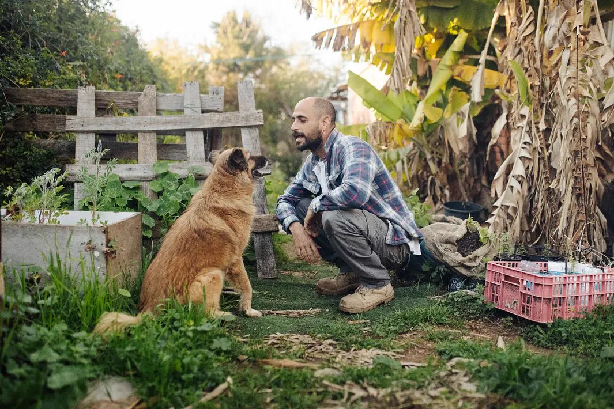
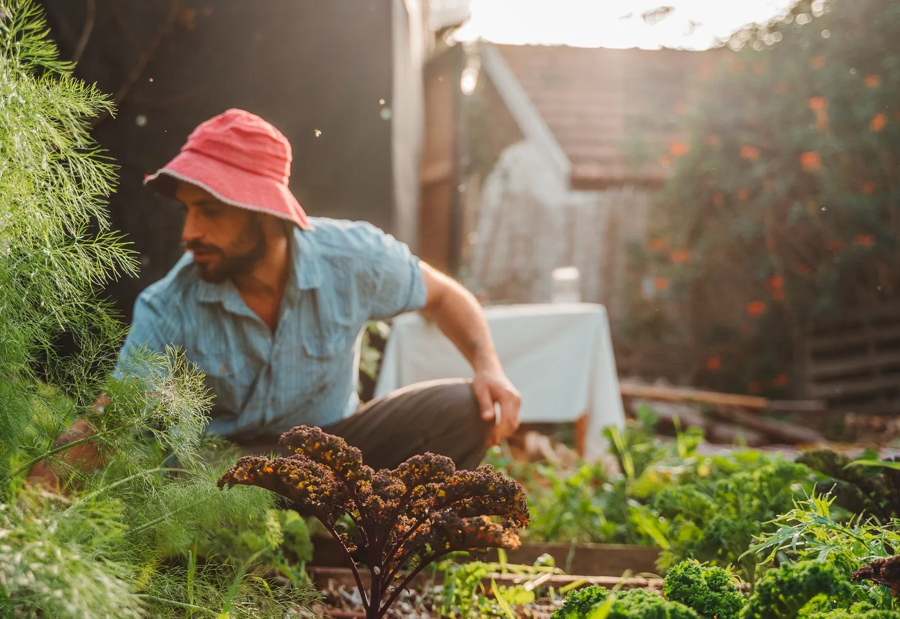
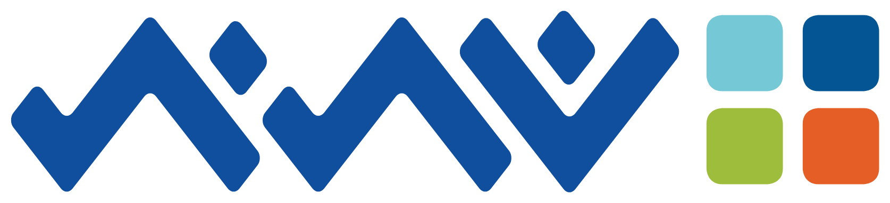

איתי שסטצקי
מייסד אדמתי, מתכנן ומקים גינות.
אדמתי / מי אנחנו
מי אנחנואדמתי הוא העסק של איתי שסטצקי: גנן, איש פרמקלצ׳ר ומנחה, שמתכנן, מקים ומטפח גינות ים־תיכוניות בכרמל, בחוף הכרמל ובחיפה.


מרכז "אדמתי" נולד במרץ 2020 אל תוך עידן הקורונה. המרכז הוקם על ידי איתי שסטצקי - גנן, איש פרמקלצ'ר ומנחה סדנאות וקורסים לאקולוגיה וקיימות.
הדרך של "אדמתי" התחילה מפוסט בפייסבוק ששאל: מי רוצה ללמוד להקים גינת ירק מקיימת מאפס ? התגובות לא הפסיקו להגיע וכך נוצר לו הקורס הפרונטלי הראשון להקמת גינת ירק במושב עופר. מאז נפתחו עוד מספר קורסים, הוכשרו מעל 70 גננים צעירים והוקמו כ20 גינות חדשות ברחבי מהמרכז ועד הצפון! המרכז כיום ממשיך ללמד קיימות בפלטפורמות שונות - בין היתר בהרצאות בזום, ייעוץ אישי ושיתופי פעולה עם גננים וקואפרטיביים שונים בחוף הכרמל.
גנן אקולוגי ומנחה קבוצות בהכשרתו. מנהל מרכז "אדמתי"
מרצה, מלמד, מייעץ ומנחה לקיימות מעשית לקבוצות, ארגונים ויחידים,
מנהל מקצועי עמותת ונטעת.
מתפעל קומפוסט קהילתי וקואפרטיב ירקות אורגניים מגינת הבית.
מתגורר במושב עופר עם רומי זוגתו, 8 תרנגולות וכלבה אחת.
לשעבר רכז מרחבים אקולוגיים ותכנית אקו-ישראל ב"חווה ואדם".
ארבעה דברים שחוזרים בכל גינה שאנחנו מקימים.
לפני שבוחרים צמח, מסתכלים: אור, רוח, מים, שכנים, והאנשים שגרים בבית.
חרוב, אלה, מרווה, קורנית. צמחים שמכירים את הקיץ היבש ואת הגשם של החורף.
קומפוסט, הומוס וחיפוי. אדמה בריאה היא הגינה עצמה, לא רק מה שגדל עליה.
לגיטימי לחיות בבית עונה אחת לפני שמחליטים על הכול. גינה טובה נבנית בקצב שלה.
צוות צעיר, שאכפת לו מכל צמח ומכל לקוח. שמות ותמונות מאיתי
מייסד אדמתי, מתכנן ומקים גינות.

צוות הביצוע: תשתיות, השקיה, הכנת קרקע, שתילה ופיתוח. שמות מאיתי

אותם אנשים שמתכננים איתכם את הגינה, מקימים אותה.
גופים ציבוריים, חברות ועסקים שעבדנו עבורם, ואנשי מקצוע שעבדנו לצדם. קובצי לוגו מקוריים מהלקוחות, ואישור להציג

ספרו לנו מה יש לכם היום, חצר, מרפסת או רצועה בכניסה, ומה הייתם רוצים שיהיה שם. נחזור אליכם כדי לתאם פגישת היכרות בשטח.